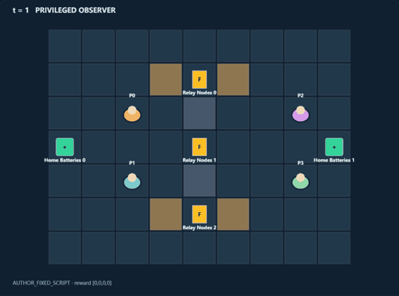
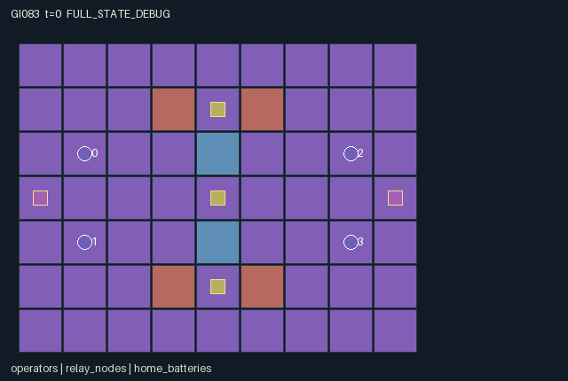

GI083 / SPATIAL
接力堡垒
两队争夺据点，用协同脉冲、能量共享与队友护盾改变攻守机会。
Original saved demonstration
Recorded native state, often authored scripts or interventions; information scope and failures are preserved in the original provenance. This is a saved demonstration, not live browser play.

Release verification episode
Untrained uniform legal actions. Actual JAX state sampled along the full original episode; full-state debug camera. No human performance or learning claim.

Run this game
crucibles play --game 83
Start Python locally, then open the address printed by the terminal. Installation, multiplayer, takeover and keyboard controls →
Objective, rewards & ending
Exact task contract
{
"objective": "Owned uncontested nodes pay every fourth step, weighted top 1, center 2, bottom 1. Both teammates receive own-team minus opponent point increments; opposing team receives the negative.",
"natural_termination": "Either team reaching at least twelve points naturally ends jointly, including simultaneous threshold arrival. Otherwise horizon 96; no extra winner bonus. Raw terminal calls absorb with zero reward.",
"interaction": "Opponent presence blocks capture and income. Coordinated pulses overcome limited protection. Shared energy and teammate shields make recovery, attack, defense and control partner-dependent.",
"observation_access": "All rule-relevant positions, terrain, scores, energy, integrity, stun, shield and relay states are public. Disabled roles have no-op only. Diagnostic per-step action flags are not native observation or scene event channels."
}Declared per-step reward bounds: -4 to 4. Observability: fully_observable.
Rules
- Two teams of two contest three nodes; the center pays twice the outer nodes.
- Attune within one tile. Operational opponents within one tile block progress and payment.
- Only meter +3 or -3 is owned. Partial counter-attunement makes a node neutral.
- Pulses spend one shared cell, selecting nearest eligible enemy on a clear cardinal ray of at most three tiles.
- Hits resolve simultaneously. Cover, brace and a live support shield each absorb one hit that tick.
- A disabling tag restores integrity to three and disables the next three decisions; the body remains an obstacle.
- Support reaches a teammate within two tiles and lasts two ticks. Home recovery adds two cells, capped at eight.
- Nodes pay every fourth tick. Twelve points ends naturally; horizon 96 otherwise truncates.
Original mechanism document (historical status wording retained)
# Relay Bastions — game-v3-00083 Status: AUTHORED_NOT_EXECUTED. Initial source attempt 0, proposal ordinal 83, window 0, training-source stream only. A=4, O=112, U=10, H=96. Observations are float32 within [-3, 96]; rewards are float32 within [-4, 4]. Stored numbers are int32 and flags bool. These finite bounds describe rules, not performance acceptance gates. ## Original arena and timing The 9 by 7 arena contains two wall tiles at (4,2)/(4,4), four cover cells at x=3/5,y=1/5 and nodes (4,1), (4,3), (4,5). West starts at (1,2)/(1,4), east at (7,2)/(7,4). Within-team operators have identical abilities but different position and shared-cell priority. Each relay has a persistent signed meter. West attunement increases it, east decreases it. Only saturation at +3/-3 is owned; partial opposing progress neutralizes ownership. An operational enemy within one tile blocks both attunement and payout. Two teammates can attune a node twice as fast. Movement precedes home recovery and energy allocation. Each recovering operator within one of its home battery adds two cells, capped at eight total. Pulses and eligible support each spend one, with the first within-team slot taking precedence when only one cell remains. A pulse spends even without a target. Its nearest eligible enemy lies on a clear cardinal ray up to three tiles; ties use lower slot. Walls block rays; operators do not. Hits accumulate simultaneously. Cover, brace and a live support shield each absorb one hit. Support reaches distance two and refreshes shield to two ticks, protecting immediately and on the next tick. Initial integrity is three. A disabling tag restores it to three and disables the following three decisions. Disabled bodies still obstruct movement. Newly tagged roles cannot attune or contest that transition. A role with positive old stun remains ineffective for that transition even if its next stun becomes zero. Every fourth tick, owned unopposed nodes pay 1,2,1 points. Rewards are zero-sum point increments shared by teammates. Tags themselves have no reward. A team reaching twelve ends naturally; simultaneous thresholds are possible and have no invented tie-break or extra winner bonus. ## Partner-dependent choices A single pulse into cover cannot damage; two suitably aligned operators can exceed one-hit protection. A pair's last two cells can fund a volley, shields or later defense. Bracing protects but prevents firing, moving and attuning. A teammate recovering at home gives up contested area to replenish the forward operator. Splitting across outer nodes can earn while a partner contests center; concentration accelerates capture and fire but leaves another approach open. Body blocking makes tandem movement and retreat depend on timing. Prospective paired tests: after the focus-fire prefix, compare one versus two pulse commands and target integrity/stun; compare support versus wait against an incoming pulse and inspect shared cells/protection; compare opposing entry into a node neighborhood with staying outside and inspect payment/attunement; compare recovery versus wait under scarce energy. These are unexecuted hypotheses. Future separately specified reach, shield duration, cover, starting positions, point weights or recovery locations could alter concentration versus spread. No randomized variant or transfer outcome is delivered here. ## Native observations and real scene All rule-relevant arena state is public. Cover binds to actual map tiles; node meter/owner and operator integrity/stun/shield/team bind to real state. Event channels show already observed score, pools, stun and ownership. Pulse/support diagnostic flags stay in raw state for separately labelled debugging, not extra role-view information. ## Action legend - 0: Wait. - 1: Move north. - 2: Move east. - 3: Move south. - 4: Move west. - 5: Attune nearby objectives. - 6: Spend one shared cell to pulse the nearest eligible opposing operator. - 7: Brace this tick. - 8: Spend one shared cell to shield nearby teammate. - 9: Recover two cells at own home battery. ## Exact observation layout - Columns [0, 4), self: Own team one-hot(2), then own within-team slot one-hot(2). - Columns [4, 9), public: Clock, team scores (2), team energy pools (2). - Columns [9, 33), public: All operators: x,y,hp,stun,shield,team in fixed slot order. - Columns [33, 45), public: Three relay nodes: x,y,meter,owner per slot. - Columns [45, 49), public: Two home batteries x,y per slot. - Columns [49, 112), public: Public 7-by-9 map flattened row-major yx. ## Interface and terminal boundary The binding addendum terminal_policy is absorbing_raw_state_natural_priority_v1. A nonterminal input increments t exactly once. Natural completion has priority over horizon truncation. raw_step selects the original entire tree and zero reward when the input done flag was already true, so terminal clock, observations and causes are preserved. Pure advance expressions may be formed on terminal inputs, but their results are discarded without side effects. No raw call resets. info returns scalar done_all, terminated and truncated; dones is the joint flag repeated across A roles. Out-of-range or masked actions deterministically become wait. Contextual commands are legal attempts, including unsuccessful attempts. Movement masks use terrain and bounds, with agent collisions resolved after simultaneous proposals. Entering another role's starting cell or a jointly proposed destination fails, so swaps and following into a just-vacated cell fail. All role slots remain physical; disabled/restrained roles keep no-op. The reset is deterministic and intentionally ignores supplied PRNG keys. No hidden mutable state, external cache, callbacks, stochastic distribution or remote service is used. All small signed holder/status/index fields are represented losslessly as int32, as the addendum permits. Declared invariants are nonnegative fields listed in manifest.json and unique active agent positions. All source state leaves are declared. Runtime preservation, shapes, dtypes and finite bounds remain unverified by execution. ## Literal source evidence Source SHA-256: `f13fabbc6d48ad8b92f984c905586710f64d4d48b07c984c253bcd18eebaebea`. Manifest SHA-256: `dcc13bf011827886cf083bb95dbbffbb6260c4b910c8b04eac24b348742d3d8b`. Scene SHA-256: `ad9e37c523d00786488af67701fd0caf540a7364e4e1c3839a053035d311b892`. Witness file SHA-256: `4832e2901733355570a89556401f8a61c6d773ddde53dea4ddfda8aa0fd6371a`. - `candidate.py:12-34`: `reset`. - `candidate.py:36-43`: `legal_actions`. - `candidate.py:45-51`: `observe`. - `candidate.py:53-123`: `advance`. - `candidate.py:125-130`: `raw_step`. Actual transition expressions: - `candidate.py:96`: `protection = cover + ((a == 7) & ready).astype(jnp.int32) + (n['shield'] > 0).astype(jnp.int32)` - `candidate.py:97`: `damage = jnp.maximum(0, hits - protection)` - `candidate.py:108`: `change = jnp.where(~present1, chan0, 0) - jnp.where(~present0, chan1, 0)` - `candidate.py:114`: `points0 = jnp.sum(jnp.where((n['owner'] == 0) & ~present1 & tick, weights, 0))` ## Community references and integration boundary Original rules and layouts were invented for this batch. No upstream code was copied. The supplied JaxMARL README informed the separate public integration target: parallel agent-keyed actions, observations, rewards and dones with __all__. This source implements the required native flat-array interface; the implementation worker owns the adapter. The supplied Pgx README informed legal-mask and explicit termination concepts, not board-game rules. Craftax informed the distinction between actual game state and rendering and raw stepping versus external resets. PureJaxRL and Craftax_Baselines/ppo_rnn.py are algorithm/integration references; they are not a new game library or a replacement for the frozen experimental learner. Only supplied snapshots were consulted. Reference URLs and exact snapshot hashes are retained in generation_record.json; no external link was followed. ## Evidence limits This package was not executed. Author-side AST whitelist, JSON/schema parsing, state-key comparison and hashing are static preflight only. They do not establish runtime correctness, eager/JIT/vmap parity, witness legality, successful play, solvability, strategic depth, learning, non-isomorphism, throughput, animation acceptance or meta-learning/transfer. The prospective paired-action comparisons above require actual later execution. No observed score, successful trajectory, training or test receipt is fabricated. No JAX import, model/API call, remote/SSH execution or download occurred. The proposal has one fixed ruleset/layout; possible future variations are ideas, not a hidden sampler. Repairs after submission require a separately assigned actual-feedback request.
Commands
Roles & abilities
agent_0 West first operator
agent_1 West second operator
agent_2 East first operator
agent_3 East second operator
Observation permissions
Training receives only the original observation rows. Role cameras use declared visibility; debug cameras are explicitly marked. Local benchmark records log debug exposure and role takeover history.
Exact observation layout
[
{
"slice": [
0,
4
],
"meaning": "Own team one-hot(2), then own within-team slot one-hot(2)",
"visibility": "self"
},
{
"slice": [
4,
9
],
"meaning": "Clock, team scores (2), team energy pools (2)",
"visibility": "public"
},
{
"slice": [
9,
33
],
"meaning": "All operators: x,y,hp,stun,shield,team in fixed slot order",
"visibility": "public"
},
{
"slice": [
33,
45
],
"meaning": "Three relay nodes: x,y,meter,owner per slot",
"visibility": "public"
},
{
"slice": [
45,
49
],
"meaning": "Two home batteries x,y per slot",
"visibility": "public"
},
{
"slice": [
49,
112
],
"meaning": "Public 7-by-9 map flattened row-major yx",
"visibility": "public"
}
]Entity visibility & attributes
[
{
"id": "operators",
"kind": "agent",
"count": 4,
"position": [
"pos"
],
"active": [
"agent_active"
],
"visibility": [
"agent_vis"
],
"attributes": [
{
"state_path": [
"team"
],
"meaning": "0 west; 1 east",
"display": "category"
},
{
"state_path": [
"hp"
],
"meaning": "Integrity; resets to three on a disabling tag",
"display": "bar"
},
{
"state_path": [
"stun"
],
"meaning": "Disabled decision ticks remaining",
"display": "bar"
},
{
"state_path": [
"shield"
],
"meaning": "Support-shield ticks remaining",
"display": "bar"
}
]
},
{
"id": "relay_nodes",
"kind": "object",
"count": 3,
"position": [
"node_pos"
],
"active": [
"node_active"
],
"visibility": [
"node_vis"
],
"attributes": [
{
"state_path": [
"meter"
],
"meaning": "Control meter from -3 east to +3 west",
"display": "number"
},
{
"state_path": [
"owner"
],
"meaning": "-1 neutral; 0 west; 1 east",
"display": "category"
}
]
},
{
"id": "home_batteries",
"kind": "resource",
"count": 2,
"position": [
"battery_pos"
],
"active": [
"battery_active"
],
"visibility": [
"battery_vis"
],
"attributes": [
{
"state_path": [
"energy"
],
"meaning": "Shared energy pool for corresponding team",
"display": "bar"
}
]
}
]Actual verification & provenance
Per-game execution receipt
{
"game": "gi083",
"status": "PASS",
"verification_revision": 2,
"source_sha256": "f13fabbc6d48ad8b92f984c905586710f64d4d48b07c984c253bcd18eebaebea",
"seed": 20261101,
"runtime": {
"jax": "0.4.38",
"numpy": "1.26.4",
"devices": [
"TFRT_CPU_0"
]
},
"dimensions": {
"num_agents": 4,
"observation_size": 112,
"num_actions": 10,
"max_steps": 96
},
"checks": {
"eager_reset": {
"status": "PASS",
"seconds": 3.0133981704711914
},
"observation_spaces_legal_masks": {
"status": "PASS",
"seconds": 1.5561752319335938
},
"eager_step": {
"status": "PASS",
"seconds": 7.430347681045532
},
"jit_reset": {
"status": "PASS",
"seconds": 0.30275797843933105
},
"jit_step": {
"status": "PASS",
"seconds": 4.43769645690918
},
"eager_jit_integer_parity_float_measurement": {
"status": "PASS",
"seconds": 0.029628992080688477
},
"jit_vmap_reset": {
"status": "PASS",
"seconds": 0.35668444633483887
},
"jit_vmap_step": {
"status": "PASS",
"seconds": 1.613675832748413
},
"outer_autoreset_api": {
"status": "PASS",
"seconds": 1.4938838481903076
},
"full_original_horizon_episode_and_render": {
"status": "PASS",
"seconds": 4.019490003585815
}
},
"human_scores": null,
"browser_controls": "PENDING",
"failures": [],
"elapsed_seconds": 26.114600658416748,
"float_parity_max_abs": 0.0,
"numerical_parity": "EXACT",
"raw_terminal_absorbing": "PASS",
"terminal_outer_reset": "PASS",
"episode_steps": 96,
"scripted_random_returns": [
0.0,
0.0,
0.0,
0.0
],
"terminal": true,
"demo_information": "FULL_STATE_DEBUG",
"demo_frames": 25,
"render_roles_checked": 4
}Chromium control verification
{
"game": "gi083",
"status": "PASS",
"human_scores": null,
"engineering": true,
"checks": [
"catalog_selected_and_real_native_reset",
"dom_queue_and_native_step",
"second_participant_ownership_and_native_joint_step",
"all_roles_individually_controllable_no_role_cap",
"explicit_debug_camera",
"release_to_pure_ai_without_reset"
],
"ui_sha256": "15b5861d23b3c42811865c954d5a988280bbfd21cf8e93754be2437a027158c5",
"seconds": 4.030344009399414
}Original identity and file hashes
{
"id": 83,
"key": "gi083",
"title": "接力堡垒",
"summary": "两队争夺据点，用协同脉冲、能量共享与队友护盾改变攻守机会。",
"tags": [
"团队对抗",
"据点控制"
],
"family": "spatial",
"dimensions": {
"num_agents": 4,
"observation_size": 112,
"num_actions": 10,
"max_steps": 96
},
"source_sha256": "f13fabbc6d48ad8b92f984c905586710f64d4d48b07c984c253bcd18eebaebea",
"manifest_sha256": "dcc13bf011827886cf083bb95dbbffbb6260c4b910c8b04eac24b348742d3d8b",
"files": [
{
"file": "candidate.py",
"sha256": "f13fabbc6d48ad8b92f984c905586710f64d4d48b07c984c253bcd18eebaebea",
"bytes": 8195,
"origin": "work/exp_2/game_incubator_v3/community_games222_225_visualization_root222_v1/native154_candidate/registry/v2/games/game-v3-00083/candidate.py"
},
{
"file": "manifest.json",
"sha256": "dcc13bf011827886cf083bb95dbbffbb6260c4b910c8b04eac24b348742d3d8b",
"bytes": 10659,
"origin": "work/exp_2/game_incubator_v3/community_games222_225_visualization_root222_v1/native154_candidate/registry/v2/games/game-v3-00083/manifest.json"
},
{
"file": "scene.json",
"sha256": "ad9e37c523d00786488af67701fd0caf540a7364e4e1c3839a053035d311b892",
"bytes": 5423,
"origin": "work/exp_2/game_incubator_v3/community_games222_225_visualization_root222_v1/native154_candidate/registry/v2/games/game-v3-00083/scene.json"
},
{
"file": "mechanism.md",
"sha256": "a954bd245c833a5e1521f3a0201819e1eddd4c02c6df87cc78ba7285f6cee88c",
"bytes": 8821,
"origin": "work/exp_2/game_incubator_v3/sources/game-v3-00083/attempt_00/mechanism.md"
},
{
"file": "playthrough.json",
"sha256": "4832e2901733355570a89556401f8a61c6d773ddde53dea4ddfda8aa0fd6371a",
"bytes": 4710,
"origin": "work/exp_2/game_incubator_v3/sources/game-v3-00083/attempt_00/playthrough.json"
}
],
"original_status": "NATIVE154_REFERENCE",
"original_saved_replay": true,
"release_validation": "PASS",
"human_scores": null,
"browser_validation": "PASS"
}